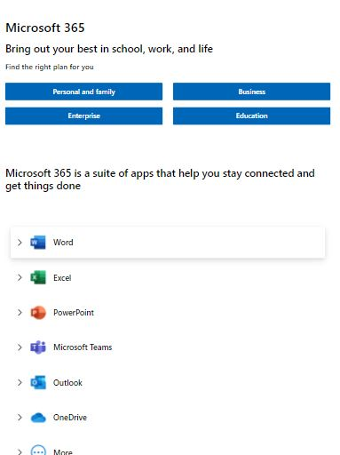

Proximity
Microsoft
microsoft.com Proximity is used by designers to illustrate relationship between a number of elements (whether they are connected or not). This Microsoft webpage shows exactly that. The Microsoft products are grouped closely together from other elements of the page.